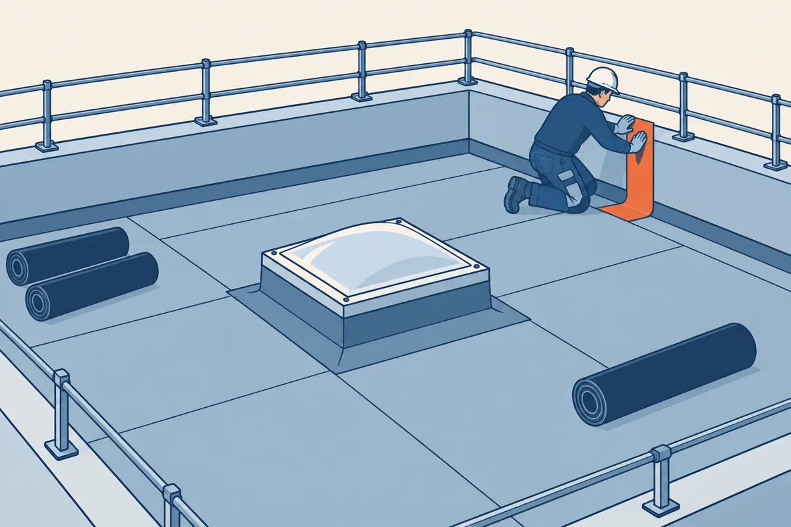

⬅ La ligne Lire les plans · Étanchéité des toitures

Cette gare apprend à déterminer des quantités de matériaux : combien de membrane commander, et combien de relevé façonner. Tout part du plan de toiture. Environ 2 heures, calculatrice en main. À la fin, vous saurez :
Cette gare reprend les gestes de la gare 7 bis, « Le métré sur plan » : passer une cote en mètres (écran 3), passer de la surface brute à la surface nette (écran 7), compter le relevé et sa hauteur développée sur une toiture-terrasse (écran 9). Chaque geste y a son exemple résolu.
| Forme | Surface | Exemple |
|---|---|---|
| Rectangle | L × l | 12 × 8 = 96 m² |
| Trapèze | (b + B) ÷ 2 × h | (6 + 10) ÷ 2 × 4 = 32 m² |
| Triangle | b × h ÷ 2 | 8 × 3 ÷ 2 = 12 m² |
| Cercle | π × r² | π × 2,5² ≈ 19,6 m² |
Les cotes du plan sont en millimètres. Passez-les en mètres avant de calculer : divisez par 1000. 4000 mm = 4,00 m ; 600 mm = 0,60 m (gare 7 bis, écran 3).
Une toiture de forme complexe se découpe en formes simples, rectangles, trapèzes et triangles, dont on additionne les surfaces. Le croquis coté de la gare 8 sert de brouillon pour ce découpage.
Exemple résolu : une toiture en L. Un rectangle de 10 m de long sur 6 m de large est prolongé d'une aile de 4 m de long sur 3 m de large, le long du même bord. Surface brute : 10 × 6 + 4 × 3 = 60 + 12 = 72 m².
La membrane ne couvre pas ce qui traverse la toiture. On retire de la surface brute :
Surface nette = surface brute − émergences. Exemple résolu : toiture de 96 m², lanterneau de 4 m², gaine de 1,5 m². Surface nette : 96 − 5,5 = 90,5 m². Chaque émergence ajoute aussi du relevé (écran 6). Le même calcul sur un plan coté est à la gare 7 bis, écran 9.
Un lé est une bande de membrane déroulée. Les lés se recouvrent pour être soudés ou collés : la surface achetée dépasse donc la surface nette.
Ajouter 10 %, c'est multiplier par 1,10. Un calcul de matériaux se majore, il ne se rogne pas.
Terrasse de 100 m² nets, membrane bitumineuse en 2 couches, rouleaux de 8 m² (données de l'exemple).
1re couche : 100 × 1,10 = 110 m².
2e couche : 110 m² aussi. Total : 220 m² de membrane.
Rouleaux : 220 ÷ 8 = 27,5. On commande 28 rouleaux.
Le nombre de rouleaux s'arrondit toujours au rouleau supérieur : on ne livre pas un demi-rouleau, et un chantier arrêté coûte plus cher qu'un rouleau d'avance. Le plaquiste fait de même avec ses plaques.
La partie courante est la surface plane de la toiture, hors relevés. Les relevés se comptent en mètres, sur le tour :
Le tour de la toiture en L de l'écran 2, côté par côté sur le croquis : 14 (le bas, 10 + 4) + 3 + 4 + 3 (la marche, 6 − 3) + 10 + 6 = 40 m. C'est aussi le tour du rectangle qui enferme le L : 2 × (14 + 6) = 40 m.
Une gaine de 0,50 × 0,50 m traverse ce toit : son tour vaut 4 × 0,50 = 2,00 m. Linéaire total : 40 + 2 = 42 m.
Hauteur développée 0,30 m : surface des bandes de relevé 42 × 0,30 = 12,60 m².
Une émergence retire des m² de partie courante et ajoute des mètres de relevé. L'oublier est l'erreur courante du chiffrage.
Répondez à tout, votre score s'affiche en bas. Calculatrice autorisée.
Vous savez chiffrer une toiture : surface nette, recouvrements, rouleaux entiers et linéaire de relevés.
Télécharger l'exercice papier (PDF)
Pour l'enseignant, le corrigé est dans l'espace enseignant, sous code. L'exercice fait chiffrer la toiture du vestiaire : surfaces, déduction, deux couches, rouleaux et relevés.
Gare suivante : le terminus de la ligne, un dossier complet, seul et en temps limité (Toiture 6).